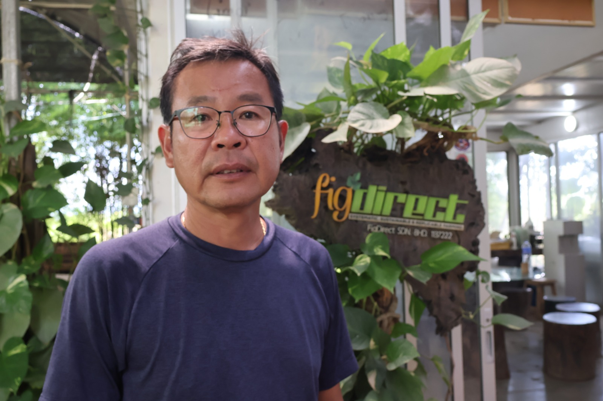

Founder of Superfruit Valley
Robin Lim is the founder and owner of Superfruit Valley in Chuping, Perlis. He is widely recognized for introducing modern agricultural methods and cultivating premium superfruits in Malaysia.
His vision is to modernize Malaysia’s agricultural industry while promoting sustainable farming practices and agro-tourism for future generations.